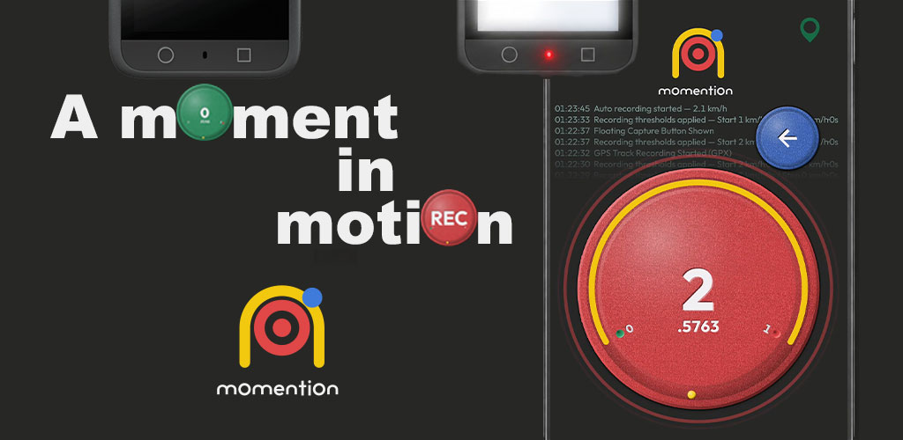

Fahrtverlauf
Route, Geschwindigkeit, Höhe und Fahrtübersicht auf einen Blick.

Bild auswählen, um es in voller Größe zu sehen.
GUIDE
mOmentiOn verbindet deine Fahrgeschwindigkeit mit deiner Actioncam. Lege vor der Fahrt die Aufnahmeschwellen fest und sieh dir danach die Route an.
Die Aufnahme startet und stoppt, sobald die eingestellten GPS-Geschwindigkeits- und Verzögerungsbedingungen erfüllt sind. Manuelle Aufnahme wird ebenfalls unterstützt.

ENTDECKE DEINE FAHRT
Echte Routenübersichten und Wiedergabevideos aus mOmentiOn.
Route, Geschwindigkeit, Höhe und Fahrtübersicht auf einen Blick.
Bild auswählen, um es in voller Größe zu sehen.
Spiele die Route ab und verfolge das Diagramm im Verlauf der Fahrt.
Spiele mehrere Fahrten gemeinsam ab und sieh, wo sie sich unterscheiden.
Verbindungseinstellungen für Insta360 und DJI sind verfügbar. Die unterstützten Funktionen hängen von Kameramodell, Firmware und Plattform ab. Prüfe deine Ausrüstung vor der Fahrt.
Richte alles im Stand ein und teste es. Bediene dein Telefon nicht während der Fahrt. GPS-Empfang und Kameraverbindung beeinflussen die automatische Aufnahme.